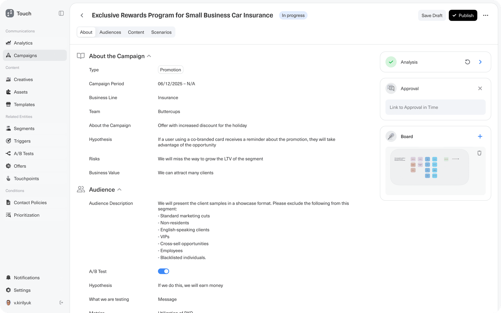
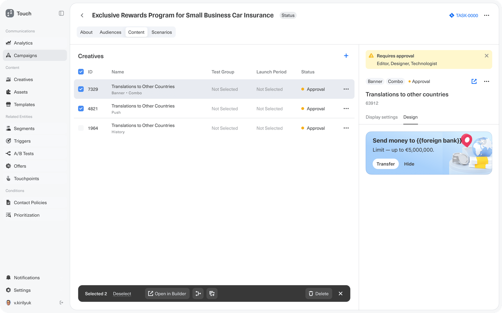
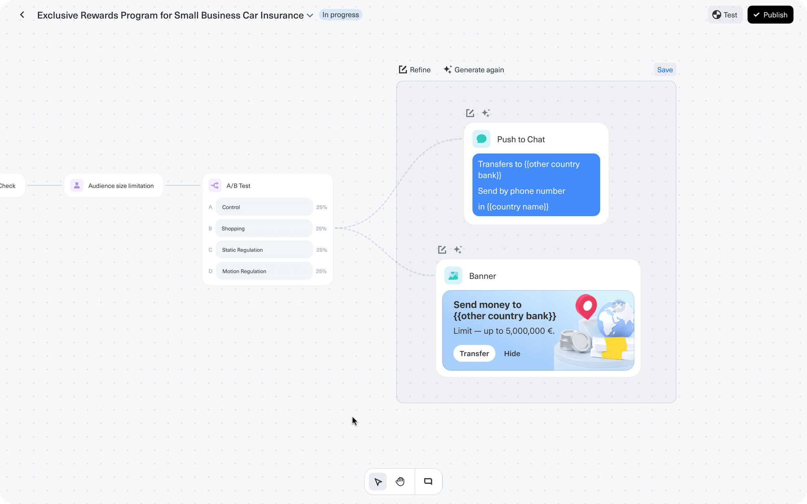
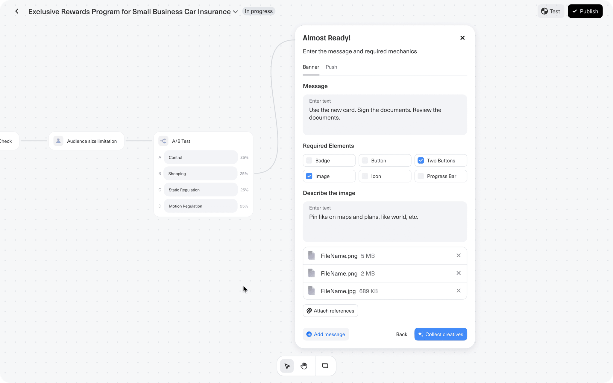

Tinkoff · FinTech · Marketing automation · Web app
Campaign launch: from months to days
At Tinkoff, launching a marketing campaign took 30 to 70 days and involved about ten different tools, held together by links in Jira. I led a team of four designers to build Touch's campaign creation flow around something that didn't exist before: the campaign itself, one entity that holds the brief, audiences, creatives, A/B tests and approvals. A launch now takes between one day and a week.
The scenario canvas. A campaign runs from launch schedule through audience checks into a four-way A/B test, and each branch is wired straight to its channels.
◆ Context
Touch, Tinkoff's internal platform for customer marketing (CVM: customer value management)
◆ Goal
Make the whole campaign launch visible in one place instead of ~10 tools linked through Jira
◆ Constraints
Regulated financial services; 8 channel formats; 1–3 mandatory approval rounds by editor, designer and technologist
◆ Research
~50 interviews I ran with users and stakeholders; launch process digitized with time cost per stage
◆ My role
Lead Product Designer. Research, concept, stakeholder buy-in; led 3 designers
◆ Impact
Launch time: 30–70 days → 1 day to 1 week
Overview
Marketing managers at Tinkoff run campaigns like Exclusive Rewards Program for Small Business Car Insurance. One campaign needs a brief, an audience, creatives for several channels, an A/B test and sign-off from three roles. All of it happens in a regulated industry, where a wrong message is a compliance risk, not just a typo.
Touch is the platform that brings this work together. I'll follow this one campaign through the new flow.
Problem
The campaign didn't exist as an object. It lived as scattered pieces in about ten systems. People moved between them by following links from one to another, and Jira tickets were the only thing holding a campaign together.
Nobody could see the whole launch. Without one place for the campaign, it was hard to tell what was ready, what was stuck and who was waiting on whom.
Launch took 30 to 70 days, depending on the campaign's complexity, the number of approvals and rework.
Same work, once per channel. A campaign for Push, SMS and a banner meant setting it up three times.
A/B tests lived elsewhere. Splits were set up outside the campaign, so it was hard to see which creative went to which branch.
Approach
Before designing anything, we spent a year studying how marketers actually launch campaigns and which business needs each step serves. Designers, product managers and analysts worked on this together. I personally ran about 50 interviews with users and internal stakeholders.
We digitized the launch process and estimated the time spent on every stage. That is where the 30–70 days come from.
The main finding: users didn't lack features. They lacked the campaign itself, one entity that shows the whole launch and holds every artifact. Jira was doing that job, badly. So the core of the design became giving the campaign a home.
My role & team
I led design and research on the project. I ran user interviews, split the work between three designers, ran design reviews and designed part of the layouts myself. I presented the concept to the team and convinced stakeholders that a single campaign entity was the right direction, and I kept the design in sync with product managers and engineering.
The campaign flow crosses several functional areas, so each designer owned one of them:
A campaign is built in four stages, each with one job. Data entered once carries over to the next stage.
About: brief, goal, hypothesis, risks and business value.
Audiences: segments attached to the campaign, with their size.
Content: creatives for all channels in one list, with approval status.
Scenarios: a visual canvas where audience, A/B test and channels are wired together.
Below are the four decisions that shaped the product.
Key decisions
Decision 01
The campaign becomes one entity
Why
Research showed that the real gap was not a missing tool but a missing object. A campaign had no home, so Jira tickets and links between systems stood in for it.
How
Every artifact now lives inside the campaign: brief, audiences, creatives, scenarios, A/B tests and approvals. Each campaign has a status in one shared list. Four stages split the work, so a marketer can finish audiences today and come back to content tomorrow without losing anything.
Result
The hypothesis and risks are written down before any creative is made, so reviewers see why the campaign exists.
Campaign list. Each campaign, including our car insurance example, is one entity with a status, instead of pieces spread across ten tools.

About stage: the brief, hypothesis and risks open the campaign. The right rail keeps AI analysis, the approval route and a board one click away.
Decision 02
Set up once for every channel
Why
A campaign that went out by Push, SMS and a banner had to be set up three times, once per channel.
How
Creatives for all 8 formats live in one content list inside the campaign. On the scenario canvas, the marketer picks several channels at once in a single modal, and they share the same audience and schedule.
Result
Adding a channel means adding a creative, not repeating the whole setup.

Content stage. Banner, Push and History creatives of one campaign sit in one list.Channel picker on the canvas: all 8 formats in one modal, several can be chosen at once.
Decision 03
The A/B test is a node on the canvas
Why
When the split lived in settings, nobody could see which creative went to which group. As a node, the test shows its branches, and each branch is wired to its own channels.
Result
The test is designed together with the communication flow. The whole experiment, from audience to the creative in every branch, reads on one screen.

A four-way A/B test on the canvas. Each branch is wired to its own Push and Banner creatives.
Decision 04
AI drafts, people keep the quality bar
Why
With 8 formats and several A/B branches, one campaign needs many creatives. AI generation helps, but only if the marketer can steer it.
How
The marketer sets the frame: message, required UI elements, an image description, reference files. AI drafts the creative inside the scenario. Refine and Generate again sit right on the canvas, so iterating never means leaving the flow.
Guardrail
Generated creatives are still reviewed by designers, so quality doesn't drop. Speed will grow step by step as AI models improve and creatives become more unified.

Creative builder. The marketer defines what must be in the banner and describes the image; AI works within those limits.
Impact
Launch time: from 30–70 days to between one day and a week.
One entity instead of ~10 tools. Brief, audiences, creatives, A/B tests, scenarios and approvals live in one campaign, with Jira no longer acting as the glue.
Company-wide rollout. Teams are moving to Touch gradually, because it changes how they work, not just which tool they open. Touch is set to become the only campaign tool across the company.
Learnings
The missing piece was an object, not a screen. Users didn't need another tool. They needed the campaign to exist as one thing that makes the whole launch visible and holds every artifact. Until then, Jira was doing that job.
AI is only as fast as you can trust it. Generated creatives still need a designer's review. The speed-up comes gradually, from better models and more unified creatives, not from skipping review.